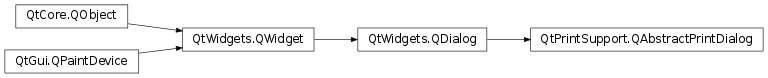

QAbstractPrintDialog¶
Inherited by: QPrintDialog
Synopsis¶
Functions¶
- def
addEnabledOption(option) - def
enabledOptions() - def
fromPage() - def
isOptionEnabled(option) - def
maxPage() - def
minPage() - def
printRange() - def
printer() - def
setEnabledOptions(options) - def
setFromTo(fromPage, toPage) - def
setMinMax(min, max) - def
setOptionTabs(tabs) - def
setPrintRange(range) - def
toPage()
Detailed Description¶
The
PySide2.QtPrintSupport.QAbstractPrintDialogclass provides a base implementation for print dialogs used to configure printers.This class implements getter and setter functions that are used to customize settings shown in print dialogs, but it is not used directly. Use
PySide2.QtPrintSupport.QPrintDialogto display a print dialog in your application.
-
class
PySide2.QtPrintSupport.QAbstractPrintDialog(printer[, parent=nullptr])¶ Parameters: - printer –
PySide2.QtPrintSupport.QPrinter - parent –
PySide2.QtWidgets.QWidget
Constructs an abstract print dialog for
printerwithparentas parent widget.- printer –
-
PySide2.QtPrintSupport.QAbstractPrintDialog.PrintRange¶ Used to specify the print range selection option.
Constant Description QAbstractPrintDialog.AllPages All pages should be printed. QAbstractPrintDialog.Selection Only the selection should be printed. QAbstractPrintDialog.PageRange The specified page range should be printed. QAbstractPrintDialog.CurrentPage Only the currently visible page should be printed. See also
QPrinter.PrintRange
-
PySide2.QtPrintSupport.QAbstractPrintDialog.PrintDialogOption¶ Used to specify which parts of the print dialog should be visible.
Constant Description QAbstractPrintDialog.None None of the options are enabled. QAbstractPrintDialog.PrintToFile The print to file option is enabled. QAbstractPrintDialog.PrintSelection The print selection option is enabled. QAbstractPrintDialog.PrintPageRange The page range selection option is enabled. QAbstractPrintDialog.PrintShowPageSize Show the page size + margins page only if this is enabled. QAbstractPrintDialog.PrintCollateCopies The collate copies option is enabled QAbstractPrintDialog.PrintCurrentPage The print current page option is enabled This value is obsolete and does nothing since Qt 4.5:
Constant Description QAbstractPrintDialog.DontUseSheet In previous versions of Qt, exec()the print dialog would create a sheet by default the dialog was given a parent. This is no longer supported in Qt 4.5. If you want to use sheets, useQPrintDialog.open()instead.
-
PySide2.QtPrintSupport.QAbstractPrintDialog.addEnabledOption(option)¶ Parameters: option – PySide2.QtPrintSupport.QAbstractPrintDialog.PrintDialogOptionUse
QPrintDialog.setOption(option, true) instead.
-
PySide2.QtPrintSupport.QAbstractPrintDialog.enabledOptions()¶ Return type: PySide2.QtPrintSupport.QAbstractPrintDialog.PrintDialogOptionsUse
QPrintDialog.options()instead.
-
PySide2.QtPrintSupport.QAbstractPrintDialog.fromPage()¶ Return type: PySide2.QtCore.intReturns the first page to be printed By default, this value is set to 0.
-
PySide2.QtPrintSupport.QAbstractPrintDialog.isOptionEnabled(option)¶ Parameters: option – PySide2.QtPrintSupport.QAbstractPrintDialog.PrintDialogOptionReturn type: PySide2.QtCore.boolUse
QPrintDialog.testOption(option) instead.
-
PySide2.QtPrintSupport.QAbstractPrintDialog.maxPage()¶ Return type: PySide2.QtCore.intReturns the maximum page in the page range. As of Qt 4.4, this function returns INT_MAX by default. Previous versions returned 1 by default.
-
PySide2.QtPrintSupport.QAbstractPrintDialog.minPage()¶ Return type: PySide2.QtCore.intReturns the minimum page in the page range. By default, this value is set to 1.
-
PySide2.QtPrintSupport.QAbstractPrintDialog.printRange()¶ Return type: PySide2.QtPrintSupport.QAbstractPrintDialog.PrintRangeReturns the print range.
-
PySide2.QtPrintSupport.QAbstractPrintDialog.printer()¶ Return type: PySide2.QtPrintSupport.QPrinterReturns the printer that this printer dialog operates on.
-
PySide2.QtPrintSupport.QAbstractPrintDialog.setEnabledOptions(options)¶ Parameters: options – PySide2.QtPrintSupport.QAbstractPrintDialog.PrintDialogOptionsUse
QPrintDialog.setOptions()instead.
-
PySide2.QtPrintSupport.QAbstractPrintDialog.setFromTo(fromPage, toPage)¶ Parameters: - fromPage –
PySide2.QtCore.int - toPage –
PySide2.QtCore.int
Sets the range in the print dialog to be from
fromtoto.- fromPage –
-
PySide2.QtPrintSupport.QAbstractPrintDialog.setMinMax(min, max)¶ Parameters: - min –
PySide2.QtCore.int - max –
PySide2.QtCore.int
Sets the page range in this dialog to be from
mintomax. This also enables thePrintPageRangeoption.- min –
-
PySide2.QtPrintSupport.QAbstractPrintDialog.setOptionTabs(tabs)¶ Parameters: tabs – Set a list of widgets as
tabsto be shown on the print dialog, if supported.Currently this option is only supported on X11.
Setting the option tabs will transfer their ownership to the print dialog.
-
PySide2.QtPrintSupport.QAbstractPrintDialog.setPrintRange(range)¶ Parameters: range – PySide2.QtPrintSupport.QAbstractPrintDialog.PrintRangeSets the print range option in to be
range.
-
PySide2.QtPrintSupport.QAbstractPrintDialog.toPage()¶ Return type: PySide2.QtCore.intReturns the last page to be printed. By default, this value is set to 0.
© 2018 The Qt Company Ltd. Documentation contributions included herein are the copyrights of their respective owners. The documentation provided herein is licensed under the terms of the GNU Free Documentation License version 1.3 as published by the Free Software Foundation. Qt and respective logos are trademarks of The Qt Company Ltd. in Finland and/or other countries worldwide. All other trademarks are property of their respective owners.